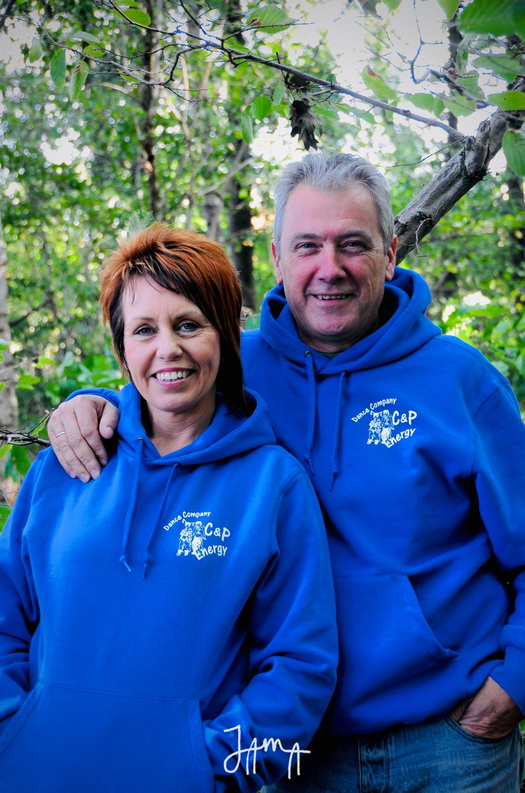
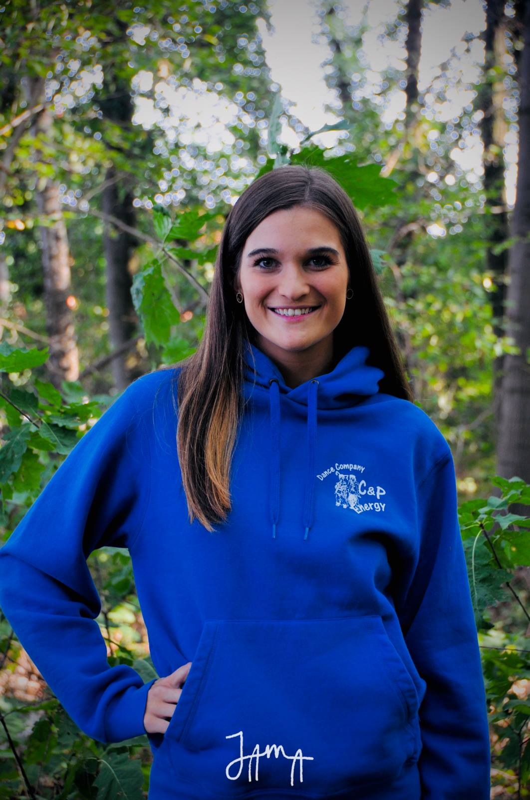
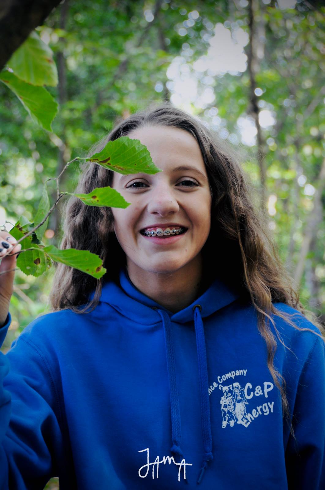
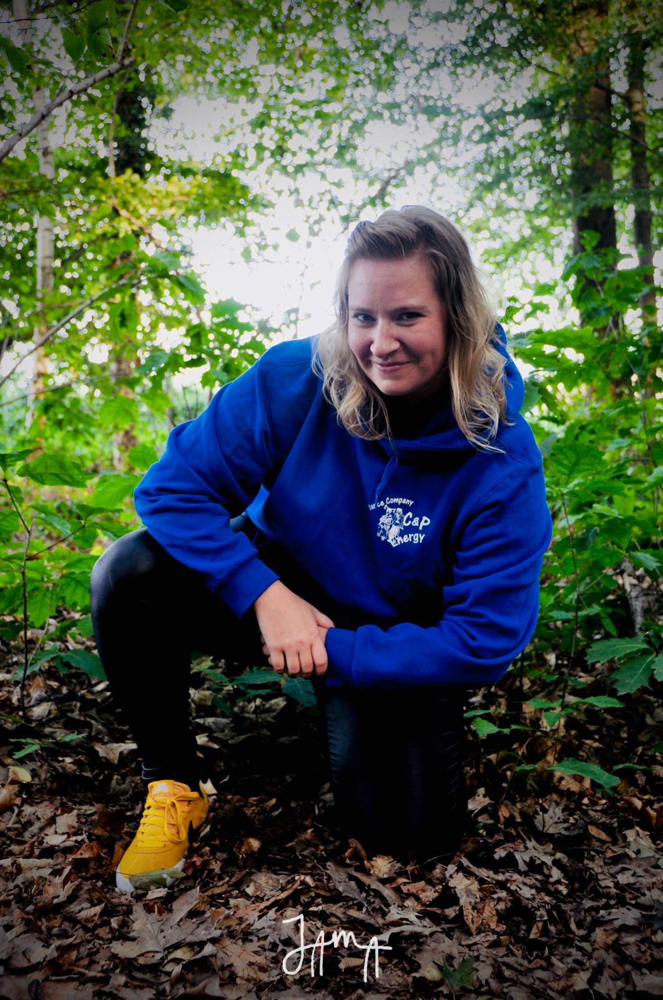
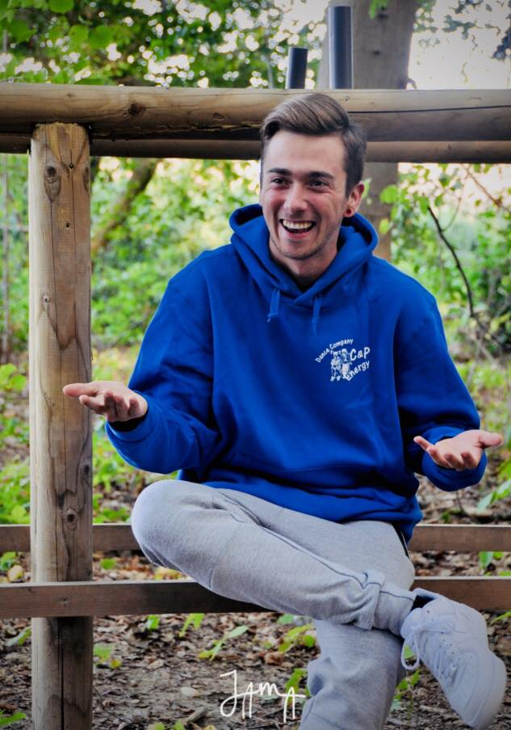
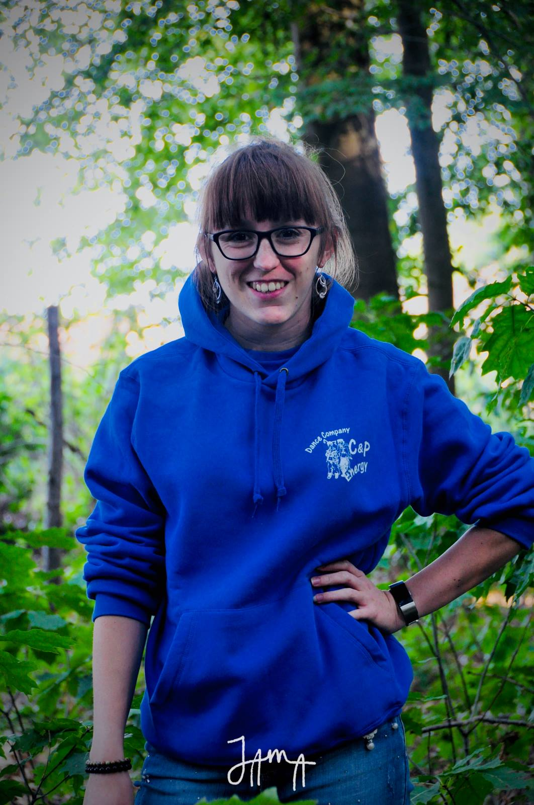
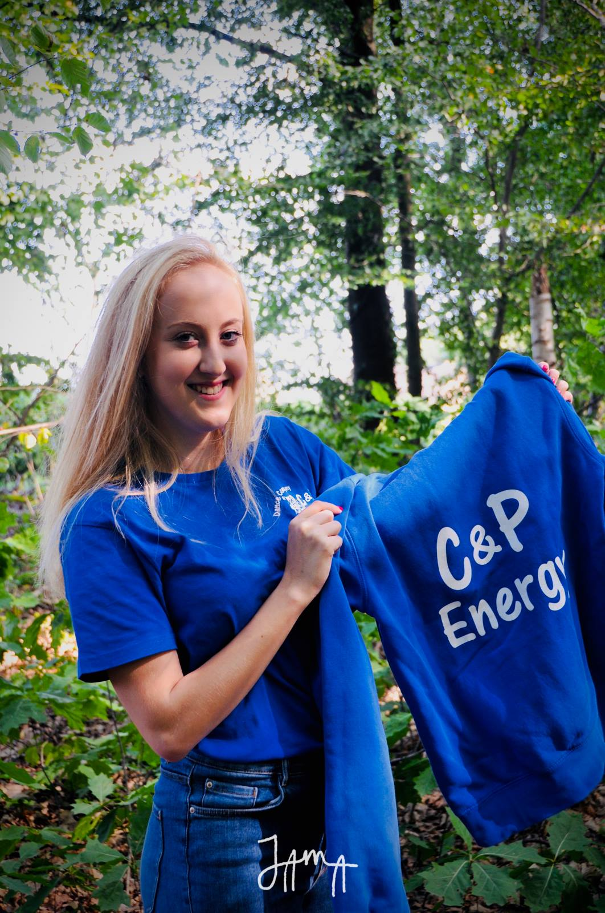

Onze lesgevers
Cariné Depré
Carine is natuurlijk niet weg te denken bij C&P energy. Zij is dan ook de C van de en een van de kloppende harten van de dansschool. De ervaring die Carine in de loop van de jaren heeft opgebouwd is teveel om op te noemen. Ze is vertrouwd met dansers van elke leeftijd en heeft energie voor 10. Carine is zeer gepassioneerd bezig met haar dansschool en lesgeven. Carine staat in voor onze jongste hiphoppers samen met Amber. Op woensdag zal zij de lessen hiphop 1 beginners (7-9 jaar) van 15u tot 16u en hiphop 1 gevorderden (9-11 jaar) van 16u tot 17u in Waanrode verzorgen. Carine zorgt niet alleen voor onze jongste hiphoppers, maar denkt ook aan de dames die nog graag een leuke choreo aanleren, plezier willen beleven (en vooral graag na de dansles nog gezellig een babbeltje doen met een stuk taart en een drankje). Dus heb je altijd al graag willen dansen of heb je ooit gedanst en wil je de draad weer oppikken? Kom naar de clipdance dames van Carine en je gaat ongetwijfeld enorm veel plezier beleven! Twintigers, Dertigers, Veertigers, Vijftigers, .... Iedereen is welkom!!! Deze lessen gaan door op donderdag van 20u tot 21u in Waanrode.
Cara De Duytsche
Cara is al heel lang lid van C&P Energy, zij was de eerste lichting C&P littles die ontstaan zijn binnen de showteams. Cara is dus niet weg te denken binnen C&P Energy en ons team van lesgevers. Vorig jaar startte ze met een nieuwe stijl, afro 14+, binnen Dance Company C&P Energy. Dansen is vooral plezier maken en laat dat nu net centraal staan in de les Afro! Geïnspireerd op verschillende Afrikaanse dansbewegingen is dit een alle-remmen-los-uurtje vol energie, leuke beats en vooral veel FUN! De lessen gaan door op woensdag van 18u tot 19u in zaal Bergendal Waanrode. Daarnaast zal Cara dit jaar ook instaan voor de lessen van C&P Energy B. Deze lessen gaan door op zondag van 19u-20u.
Elle Bokken
Deze enthousiaste lesgever start aan haar 3e dansseizoen binnen ons team, ze is lesgever sinds 2017. Ze werd dit dansseizoen nog 6e op het WK van Udo met Energetix, waar ze al 5 jaar deel van uitmaakt.Elle is onze lesgeefster moderne dans. Ze zal deze lessen geven in Bergendal Waanrode op maandag voor de 9 tot 14 jarigen (18u30-19u30) en voor de 14+ (19u30-20u30). Ook verzorgt ze de lessen moderne dans in Houtemveld Tienen voor de 12+ op zaterdag (18u-19u). Naast de moderne dans, geeft Elle Bokken samen met Romina de BBB lessen op woensdag in Waanrode van 21u-22u. Op zaterdag zal Elle instaan voor ons showteam B+. Met al haar ervaring als lesgeefster modern en als wedstrijddanser hiphop, zal zij deze groep een gevarieerd aanbod kunnen geven.

Sjanne Vandenhoeck
Sjanne is sinds vorig jaar mee lesgever geworden binnen enkele hiphop groepen van Romina. Sjanne is een danser met veel talent! Haar ervaring als danser modern en als danser hiphop brengen haar tot een verrijking in haar choreos. Sjanne werd dit jaar ook 6e op het WK van Udo samen met wedstrijdteam Energetix. Veel dansers kijken op naar haar binnen de dansschool! Sjanne zal lesgeven op donderdag aan hiphop 2 gevorderden van 19u tot 20u. Daarnaast zal ze Romina als co-lesgever ondersteunen bij de hiphop young adults op zaterdag van 17u tot 18u in Hal 4 in Houtemveld Tienen.
Romina Pira
Romina geeft sinds 2010 les bij Dance company C&P energy. Jaar in jaar uit weet Romina een goede klik te maken met de kinderen door de gouden combinatie van fun, plezier en jaren ervaring met omgaan met kinderen (mede dankzij jaren actief op sportkamp). Ze werd ook dit jaar met Energetix 6e op het WK Udo. Ze staat in voor de lessen hiphop die gegeven worden in Waanrode en in Tienen. Bij deze lessen wordt ze regelmatig ondersteund door co-lesgever Sjanne Vandenhoeck.

Jordy Chantrain
Jordy is sinds 2018 actief als lesgever binnen ons team. Jordy brengt enorm veel sfeer in zijn danslessen door zijn eeuwige enthousiasme!!! Ook heeft hij enorm veel ervaring als danser, zo werd ook hij met energetix 6e of het WK van Udo! Jordy zal een nieuwe les binnen onze lessenreeks geven: MUSICAL DANCE. Zeker de moeite om langs te komen en deze plezierige les te proberen. Deze lessen gaan door op woensdag in Waanrode van 17u tot 18u. Jordy zal daarnaast instaan voor het showteam A op zondag van 20u tot 21u.
Amber Claes
Amber is onze lesgeefster die instaat voor de kinderen die graag starten met hiphop op hun 7e. Zij zal op woensdag de lessen hiphop 1 beginners (7-9 jaar) van 15u tot 16u en hiphop 1 gevorderden (9-11 jaar) van 16u tot 17u in Waanrode verzorgen. Amber is een heel gemotiveerd iemand die vol enthousiasme lesgeeft. Naast onze jongste hiphoppers staat Amber ook in voor onze allerkleinste dansertjes in Waanrode. De kleuters (3 tot 5 jaar) zijn bij haar welkom op zondag van 10u tot 11u en de kinderen tot en met 7 jaar zijn welkom van 11u tot 12u. Tot slot zal Amber van september tot december samen met Romina showteam C van een superleuke topdans voorzien. Hier kijkt ze enorm hard naar uit en zal ze zich ook meer dan 100% voor inzetten! Naast het lesgeven is Amber ook heel geëngageerd binnen de dansschool en is ze altijd bereid om te helpen waar nodig.
Eline Stouthuyzen
Eline geeft sinds 2017 les binnen C&P. Door haar eeuwige enthousiasme bij kinderen, is ze ook heel populair bij de kleinsten. De kinderen hebben haar graag en komen met een glimlach naar de dansles. Daarom staat Eline dit jaar opnieuw in voor de kleuterdans en kinderdans in Tienen op het Houtemveld. Daarnaast zal Eline instaan voor showteam C samen met Romina op zondag van 18u tot 19u. Zij zullen samen een dans voorzien voor deze jonge talenten van januari tot en met mei.